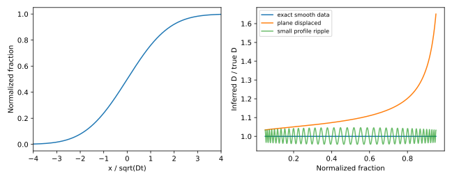

IIT Hyderabad · NPTEL · Independent study edition
Boltzmann–Matano analysis as an inverse problem
An annealed diffusion couple supplies a composition profile rather than a diffusivity. Recovering a coefficient from that profile requires both an integral and a derivative. Their combination can reveal a constitutive function, but it can also magnify a misplaced origin, a truncated tail, or a small measurement ripple.
Lecture 27 supplies the Boltzmann transformation and Matano-plane construction. The full derivation here is confined to constant molar volume and a single homogeneous phase. The numerical profiles are synthetic and have a known coefficient, making inversion error measurable.
12.1 Specify the inverse problem before integrating L27 00:21
Let \(c(x,t)\) be the molar concentration of component B, in mol/m³, with position \(x\) in meters and elapsed time \(t>0\) in seconds. The coordinate is volume-fixed. Assume a binary single-phase couple at fixed temperature and pressure, constant molar volume, no source or reaction, no external drift, and no spatially heterogeneous shortcut transport. Adopt a local scalar interdiffusion coefficient \(\widetilde D(c)>0\), in m²/s, depending on concentration but not explicitly on position or time.
The initial state is an ideal planar step: \(c=c_-\) on the left and \(c=c_+\) on the right, with \(c_+>c_-\). The far fields retain these values throughout the anneal. This semi-infinite assumption excludes an experiment whose outer faces have already altered the diffusion zone. Local conservation and the constitutive flux give
\[ \partial_t c=\partial_x[\widetilde D(c)\partial_xc],\qquad J_B^V=-\widetilde D(c)\partial_xc. \tag{12.1} \]The superscript V identifies the volume-fixed flux. A variable coefficient makes the equation nonlinear: expanding its spatial derivative gives a gradient-squared term. Calling it inhomogeneous merely because it is nonlinear confuses two mathematical properties. The inverse question is to determine a function \(\widetilde D(c)\) from a measured profile at known time, conditional on this entire model.
Constant molar volume makes a mole-fraction profile an affine rescaling of concentration. One may therefore replace \(c\) throughout the inverse expression by a normalized fraction \(Y=(c-c_-)/(c_+-c_-)\). The constant scale cancels between the composition integral and the derivative. This cancellation does not justify the same substitution when volume changes with composition. Ideal mixing concerns Gibbs energy; it does not imply constant volume.
12.2 Similarity removes time without making the equation linear L27 04:29
The step problem has no imposed length scale. Its diffusion scaling suggests a profile depending on \(\lambda=(x-x_M)/\sqrt t\), where \(x_M\) is a fixed balance-plane position to be determined. This variable has units m/s½; it becomes dimensionless only after division by a reference square-root diffusivity. Write \(c(x,t)=C(\lambda)\). A prime below means differentiation with respect to this dimensional similarity variable.
At fixed position, \(\partial_t\lambda=-\lambda/(2t)\); at fixed time, \(\partial_x\lambda=t^{-1/2}\). Thus \(c_t=-\lambda C'/(2t)\) and \(\partial_x(\widetilde D c_x)=t^{-1}(\widetilde D C')'\). Canceling time gives
\[ -\frac{\lambda}{2}C'=\frac{d}{d\lambda}(\widetilde D(C)C'). \tag{12.2} \]The equation is now ordinary in the similarity coordinate, but it remains nonlinear through the unknown coefficient function. A point of fixed composition has a fixed \(\lambda\) and moves as \(x=x_M+\lambda\sqrt t\). Its velocity is \(\lambda/(2\sqrt t)\). This is a geometric motion of a contour, not automatically the lattice velocity, marker velocity, or velocity of an atom.
Similarity itself is testable. Profiles measured at several times should collapse when plotted against an appropriately registered \((x-x_M)/\sqrt t\) if the same constitutive function and the assumed initial step apply. Failure can indicate finite initial width, thermal transients, evolving phases, finite-size effects, or a time-dependent coefficient. Collapse supports the assumed scaling; it does not independently establish every microscopic mechanism.
12.3 The inverse integral and the balance plane L27 11:42
Assume the interior profile is smooth and strictly increasing, so position is a single-valued function of concentration. At the fixed observation time, assume the balance integral \(\int_{c_-}^{c_+}|x(c)-x_0|\,dc\) is finite for a finite reference position \(x_0\), and that \((x-x_0)(c-c_-)\to0\) at the left infinity and \((x-x_0)(c-c_+)\to0\) at the right infinity. These are the tail-decay and finite-area conditions used below. Also require vanishing terminal fluxes and \(c_x(x_*,t)\gt0\) at an evaluated interior point. Integrate(12.2) from the unaffected left terminal to that point, marked by an asterisk. Changing the integration variable from\(\lambda\) to\(C\) gives \(\widetilde D(C_*)C'_*=-\tfrac12\int_{c_-}^{C_*}\lambda(C)dC\). Since\(C'=\sqrt t\,c_x\), division by the nonzero slope gives the recovered coefficient
\[ \widetilde D(c_*)=-\frac{1}{2t\,c_x(x_*)} \int_{c_-}^{c_*}[x(c)-x_M]dc. \tag{12.3} \]This is the Boltzmann–Matano relation under the specified assumptions. The units are \((\mathrm{mol/m^2})/[\mathrm{s}\,\mathrm{mol/m^4}]=\mathrm{m^2/s}\). For the increasing profile, the full composition-weighted integral is zero; its partial integral is negative before returning to zero at the right terminal. The minus sign consequently gives positive diffusivity. Reversing coordinate or component conventions requires a consistent rederivation of the limits and signs, rather than replacing the integral by its unsigned area.
The right terminal also has zero flux. Integrating over the entire concentration range therefore requires \(\int_{c_-}^{c_+}(x-x_M)dc=0\), giving the balance plane
\[ x_M=\frac{\int_{c_-}^{c_+}x(c)dc}{c_+-c_-}. \tag{12.4} \]The Matano plane is this mass-balance plane for the selected concentration and coordinate conventions. Its coincidence with an original geometrical contact plane requires the constant-volume, conserved-amount registration used here. A marker plane is a different object: markers follow lattice motion when the intrinsic component rates differ. Interchanging the two planes erases exactly the information explored in Chapter 13.
Integration by parts links the composition integral to measurable areas. With \(u=c-c_-\), the lower endpoint contribution vanishes, and
\[ \int_{c_-}^{c_*}(x-x_M)dc =(x_*-x_M)(c_*-c_-)-\int_{-\infty}^{x_*}(c-c_-)dx. \tag{12.5} \]The complete profile balance is equivalently equality of solute gained on the low-concentration side and solute lost on the high-concentration side, compared with a step at \(x_M\). The actual measured endpoints must be sufficiently far into the unaffected material to approximate the infinite limits. A finite scan ending inside a tail assigns a missing area to the wrong place and changes the inferred plane.
The integral and derivative form is documented in Tas Kavakbasi and colleagues, PDF pp. 1–2, Eqs. 1–3. Their fitting comparisons on pp. 4–6 make a practical point: two fits that appear close as concentration curves can have materially different derivatives and recovered diffusion coefficients. The mathematical inverse expression is not an assurance that every curve fit supplies a reliable constitutive estimate.
12.4 Sensitivity, endpoints, and volume conventions L27 20:58
Suppose the inferred plane is displaced by \(\delta x_M\) while the measured profile is held fixed. The numerator integral in (12.3) changes by \(-\delta x_M(c_*-c_-)\). To first order, and exactly for this isolated plane change,
\[ \delta\widetilde D=\frac{\delta x_M(c_*-c_-)}{2t\,c_x(x_*)}. \tag{12.6} \]The error grows where the slope is small and generally differs between the two sides of the profile. An apparently harmless origin shift can therefore create an artificial composition dependence. Translating both measured positions and the correctly calculated balance plane together leaves (12.3) unchanged; changing one without the other does not.
Near a terminal, both the integral and the slope tend to zero. The expression is a limiting ratio, not a reliable division of two noisy endpoint numbers. A line compound, an internal turning point, a composition discontinuity, or unresolved multiphase material invalidates the required local inversion. Negative inferred values in a nominal stable single-phase couple are diagnostic: check noise, tails, smoothing, and model assumptions before calling them negative physical diffusion coefficients.
A useful inference workflow retains raw observations, composition calibration, spatial calibration, terminal estimates, and uncertainty. Fit physically admissible monotone profiles, vary the fitting family and smoothing strength, and repeat the integral and derivative calculation. Restrict reporting to an interior range supported by resolution and slope. If uncertainty is available, resample observations and calibration parameters to obtain an ensemble of recovered functions. A single smooth line without sensitivity information can hide the dominant uncertainty.
Volume assumptions remain physical rather than cosmetic. Different component partial molar volumes change the relation between concentration, mole fraction, material displacement, and flux frame. The owning NIST abstract by Sekerka, McFadden, and Boettinger explicitly distinguishes local center-of-volume and center-of-moles frames in the variable-volume extension. That abstract establishes the need for frame care; it is not used here as an inspected proof of a generalized formula. Likewise, the Sauer–Freise publisher abstract addresses volume change. Avoiding an explicit Matano-plane calculation does not remove all volume and constitutive assumptions.
12.5 Recover a known function before fitting an unknown one
The executable laboratory starts from the constant-coefficient normalized solution \(Y(x,t)=\{1+\operatorname{erf}[x/(2\sqrt{Dt})]\}/2\), where \(D=2\times10^{-14}\) m²/s and \(t=10^5\) s are synthetic inputs. The scale \(\sqrt{Dt}=44.7214\) micrometers. It computes the plane by quadrature, accumulates the integral in composition space, and divides by the analytic derivative to isolate quadrature error first.
On the central 5–95% range, the maximum relative coefficient error is \(4.17\times10^{-8}\). This is a numerical check of the discrete inverse implementation, not a statistical uncertainty for an experiment. Displacing the plane by 4.47214 micrometers produces inferred coefficients approximately \(2.1010,2.1772,2.4040\times10^{-14}\) m²/s near normalized fractions 0.2, 0.5, and 0.8, although the true value is constant.
The second experiment adds the deterministic observation ripple \(0.001\sin(50x/\sqrt{Dt})Y(1-Y)\) and estimates its derivative numerically. This is a deliberately imposed measurement perturbation, not a stochastic noise model or a solution of a new transport equation. The recovered interior coefficient spans about 0.9576 to 1.0463 times the true coefficient. Its rapid oscillation reveals differentiation sensitivity. Smoothing can suppress it, but the resulting bias also needs assessment; choosing a smooth graph is not the same as identifying the true coefficient.

The code writes its actual output and the figure. Its assertion targets only the interior recovery of a known model. Production use would need checks for monotonicity, meaningful terminal values, positive annealing time, nonzero interior slopes, and units. These are input conditions to be diagnosed, not values to be silently repaired by clipping an inferred coefficient.
12.6 Exercises with complete solutions
1. Chain-rule audit
Derive (12.2) from the similarity variable. Is that variable dimensionless?
Worked solution
With fixed plane, \(\lambda_t=-\lambda/(2t)\) and \(\lambda_x=1/\sqrt t\). Thus \(c_t=-\lambda C'/(2t)\), \(c_x=C'/\sqrt t\), and the flux derivative is \((\widetilde D C')'/t\). Multiplying the PDE by time produces (12.2). The variable has units m/s½. Dividing by \(\sqrt{D_{\rm ref}}\) creates a dimensionless variable, but that reference diffusivity must then be retained consistently in the transformed equation.
2. Recover constant diffusivity analytically
For the normalized error-function solution, show that the inverse numerator equals \(-2tD Y_x\).
Worked solution
Here \(Y_x=e^{-x^2/(4Dt)}/[2\sqrt{\pi Dt}]\). Converting the composition integral gives \(I=\int_{-\infty}^{x}\xi Y_\xi d\xi\). The antiderivative of \(\xi e^{-\xi^2/(4Dt)}\) is \(-2Dt e^{-\xi^2/(4Dt)}\). The left tail vanishes, so \(I=-2DtY_x\). Substitution into (12.3) returns D at every finite interior point. The two tails remain limiting ratios, even though this exact expression has a well-defined limit.
3. Translation and plane error
Why does translating all positions by a constant leave the recovered coefficient unchanged, whereas moving only the chosen plane changes it?
Worked solution
If \(x\mapsto x+a\), (12.4) gives \(x_M\mapsto x_M+a\), so the difference \(x-x_M\) and local derivative are unchanged. If only the plane moves by \(\delta\), the integral changes by \(-\delta(c_*-c_-)\). The coefficient therefore changes by \(\delta(c_*-c_-)/(2tc_x)\). A coordinate convention and a physically misregistered balance plane are different operations.
4. A terminal value
A measured terminal slope is zero within uncertainty. Should a software implementation return an infinite diffusivity there?
Worked solution
No. In the semi-infinite model both numerator and derivative tend to zero; their ratio must be obtained as a controlled limit. Finite measurement noise and tail truncation usually destroy reliable endpoint division. The appropriate output is an unsupported endpoint estimate with an explicitly restricted interior reporting range. A fitted asymptotic model may extend that range, but the extension depends on that model and should carry sensitivity bounds. Infinity is not an experimentally identified coefficient.
5. A nonmonotone profile
A scan has an interior maximum and then decreases. Can the same global inverse \(x(c)\) be used in (12.3)?
Worked solution
No: one concentration corresponds to multiple positions, so the required inverse is not single-valued. The turning point also has zero slope. Check whether this is noise, a multiphase boundary, a multicomponent uphill profile, or an initial state outside the single-step assumptions. Splitting the curve into branches does not automatically restore the derivation, because the integration constant and terminal boundary condition came from the full single-phase semi-infinite problem. A different model must establish any branchwise inference.
6. Design an inverse validation
Specify three independent checks before accepting a recovered composition-dependent coefficient.
Worked solution
First, recover a known analytic profile with the same sampling and numerical operations, as the laboratory does; this checks implementation. Second, vary terminal estimates, smoothing, and spatial calibration within uncertainty; this checks inference stability. Third, use the recovered function in a forward solver and compare a separate-time profile with conserved amount and appropriate boundary conditions; this tests prediction outside the fitted scan. None alone proves microscopic validity. Phase identity and volume/frame assumptions remain independently necessary.
12.7 Sources and scope
L27 supplies the inverse-problem sequence. The cited profile-analysis paper supports the formula and fitting sensitivity at the inspected locations. The NIST and Sauer–Freise pages were inspected at abstract level only; no full generalized proof is claimed. This chapter's derivation establishes the constant-volume expression locally.
A successful inverse fit identifies a coefficient conditional on a model, geometry, calibration, and thermal history. It does not separate the two intrinsic component coefficients or determine lattice motion. Those require the additional marker information and frame transformations developed next.
Python laboratory
Run code/ch12.py. Inputs and scientific limits are specified in the chapter and program.
Complete runnable source
"""Boltzmann-Matano inversion of synthetic error-function data."""
import json
from pathlib import Path
import matplotlib
import matplotlib.pyplot as plt
import numpy as np
from scipy.integrate import cumulative_trapezoid, trapezoid
from scipy.special import erf
matplotlib.use("Agg")
matplotlib.rcParams["svg.hashsalt"] = "ch12"
BASE = Path(__file__).resolve().parents[1]
D, time = 2e-14, 1e5
scale = np.sqrt(D * time)
x = np.linspace(-10 * scale, 10 * scale, 20001)
y = (1 + erf(x / (2 * scale))) / 2
slope = np.exp(-x * x / (4 * D * time)) / (2 * np.sqrt(np.pi * D * time))
plane = trapezoid(x, y) / (y[-1] - y[0])
integral = cumulative_trapezoid(x - plane, y, initial=0)
estimate = -integral / (2 * time * slope)
interior = (y > 0.05) & (y < 0.95)
relative_error = np.max(np.abs(estimate[interior] / D - 1))
assert relative_error < 1e-5
shift = 0.1 * scale
wrong = -(integral - shift * (y - y[0])) / (2 * time * slope)
records = []
for value in [0.2, 0.5, 0.8]:
i = np.argmin(abs(y - value))
records.append(
{
"fraction": float(y[i]),
"D_m2_s": float(estimate[i]),
"wrong_plane_D_m2_s": float(wrong[i]),
}
)
# A smooth deterministic perturbation is an observation error, not dynamics.
perturbed = y + 0.001 * np.sin(50 * x / scale) * y * (1 - y)
observed_slope = np.gradient(perturbed, x)
observed_plane = trapezoid(x, perturbed) / (perturbed[-1] - perturbed[0])
observed_int = cumulative_trapezoid(x - observed_plane, perturbed, initial=0)
observed_D = -observed_int / (2 * time * observed_slope)
fig, ax = plt.subplots(1, 2, figsize=(9, 3.6))
ax[0].plot(x / scale, y)
ax[0].set(xlim=(-4, 4), xlabel="x / sqrt(Dt)", ylabel="Normalized fraction")
ax[1].plot(y[interior], estimate[interior] / D, label="exact smooth data")
ax[1].plot(y[interior], wrong[interior] / D, label="plane displaced")
ax[1].plot(
y[interior],
observed_D[interior] / D,
alpha=0.7,
label="small profile ripple",
)
ax[1].set(xlabel="Normalized fraction", ylabel="Inferred D / true D")
ax[1].legend(fontsize=8)
fig.tight_layout()
fig.savefig(
BASE / "assets/figures/ch12-inversion.svg", metadata={"Date": None}
)
out = {
"synthetic": True,
"D_true_m2_s": D,
"time_s": time,
"diffusion_scale_m": float(scale),
"plane_m": float(plane),
"max_relative_error_5_to_95_percent": float(relative_error),
"plane_displacement_m": float(shift),
"interior_values": records,
"ripple_relative_D_range": [
float(observed_D[interior].min() / D),
float(observed_D[interior].max() / D),
],
}
text = json.dumps(out, indent=2)
(BASE / "code/ch12-output.json").write_text(text + "\n", encoding="utf-8")
print(text)
Recorded execution output
{
"synthetic": true,
"D_true_m2_s": 2e-14,
"time_s": 100000.0,
"diffusion_scale_m": 4.4721359549995795e-05,
"plane_m": -2.806210228090461e-22,
"max_relative_error_5_to_95_percent": 4.1652778115519595e-08,
"plane_displacement_m": 4.47213595499958e-06,
"interior_values": [
{
"fraction": 0.20004596283268383,
"D_m2_s": 2.000000083293756e-14,
"wrong_plane_D_m2_s": 2.101038335999162e-14
},
{
"fraction": 0.5,
"D_m2_s": 2.0000000833055563e-14,
"wrong_plane_D_m2_s": 2.1772454683958354e-14
},
{
"fraction": 0.7999540371673164,
"D_m2_s": 2.0000000832937603e-14,
"wrong_plane_D_m2_s": 2.404037020684273e-14
}
],
"ripple_relative_D_range": [
0.9575774058566852,
1.046340120317837
]
}